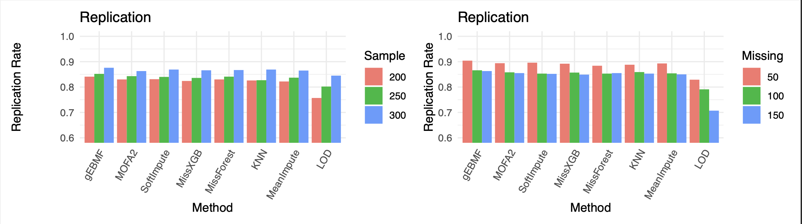

Last updated: 2025-04-13
Checks: 6 1
Knit directory:
omics-imputation-paper/analysis/
This reproducible R Markdown analysis was created with workflowr (version 1.7.1). The Checks tab describes the reproducibility checks that were applied when the results were created. The Past versions tab lists the development history.
The R Markdown file has unstaged changes. To know which version of
the R Markdown file created these results, you’ll want to first commit
it to the Git repo. If you’re still working on the analysis, you can
ignore this warning. When you’re finished, you can run
wflow_publish to commit the R Markdown file and build the
HTML.
Great job! The global environment was empty. Objects defined in the global environment can affect the analysis in your R Markdown file in unknown ways. For reproduciblity it’s best to always run the code in an empty environment.
The command set.seed(1) was run prior to running the
code in the R Markdown file. Setting a seed ensures that any results
that rely on randomness, e.g. subsampling or permutations, are
reproducible.
Great job! Recording the operating system, R version, and package versions is critical for reproducibility.
Nice! There were no cached chunks for this analysis, so you can be confident that you successfully produced the results during this run.
Great job! Using relative paths to the files within your workflowr project makes it easier to run your code on other machines.
Great! You are using Git for version control. Tracking code development and connecting the code version to the results is critical for reproducibility.
The results in this page were generated with repository version e3d5ff5. See the Past versions tab to see a history of the changes made to the R Markdown and HTML files.
Note that you need to be careful to ensure that all relevant files for
the analysis have been committed to Git prior to generating the results
(you can use wflow_publish or
wflow_git_commit). workflowr only checks the R Markdown
file, but you know if there are other scripts or data files that it
depends on. Below is the status of the Git repository when the results
were generated:
Ignored files:
Ignored: .Rproj.user/
Unstaged changes:
Modified: analysis/xqtl_replication.Rmd
Note that any generated files, e.g. HTML, png, CSS, etc., are not included in this status report because it is ok for generated content to have uncommitted changes.
These are the previous versions of the repository in which changes were
made to the R Markdown (analysis/xqtl_replication.Rmd) and
HTML (docs/xqtl_replication.html) files. If you’ve
configured a remote Git repository (see ?wflow_git_remote),
click on the hyperlinks in the table below to view the files as they
were in that past version.
| File | Version | Author | Date | Message |
|---|---|---|---|---|
| Rmd | e3d5ff5 | “John | 2025-04-13 | update |
In the context of real-world xQTL discoveries, the absence of known ground truth poses a challenge in validating the robustness of different imputation methods for the xQTL signals obtained through them. To address this, we conduct replication analyses on proteomics data from ROSMAP. This page documents the procedure of replication analysis.
First, load the packages needed for this analysis and the original phenotype data.
library(tidyverse)
library(data.table)
library(qvalue)
library(stringr)
library(patchwork)
pheno <- read_delim('combine_r1andr2_protein.reg_cov_cog.uniq.proj.bed.gz')We defined the standard set as the pQTL result using subset of observed samples in proteomics data. We focus on the proteins with \(>350\) observed samples. For proteins with more than 350 observed samples, QTL analysis is conducted on observed samples.
First, we split the phenotype by each features (i.e. proteins) with more than 350 observed samples.
write_bed <- function(data_row, file_name) {
# Write the row to a BED file
write_delim(data_row, file_name, delim = '\t')
}gene_list <- c()
id_list <- c()
chr_list <- c()
for (i in 1:nrow(pheno)) {
data_row <- pheno[i, ]
# Calculate number of exsiting samples
num <- sum(!is.na(data_row[, -c(1:4)]))
# Create file name
file_name <- paste0('strategy1/input_per_gene/standard/rosmap_pheno.', data_row$ID, '.bed')
ensg_id <- str_extract(data_row$ID, "ENSG[0-9]+")
# Write the row to a BED file if there are more than 350 exsiting samples
if (length(data_row) > 350) {
write_bed(data_row, file_name)
gene_list <- c(gene_list, ensg_id)
id_list <- c(id_list, data_row$ID)
chr_list <- c(chr_list, data_row$chr)
}
}Then, we run cis-QTL analysis on each protein with more than 350 samples by using FunGen-xQTL Computational Protocol.
for (i in length(gene_lst)) {
sos_command <- paste0(
"sos run xqtl-protocol/pipeline/TensorQTL.ipynb cis:1 ",
"--genotype-file ROSMAP_NIA_WGS.leftnorm.bcftools_qc.plink_qc.", gene_list[i], ".bed ",
"--phenotype-file strategy1/input_per_gene/standard/rosmap_pheno.", id_list[i], ".bed.gz ",
"--covariate-file cov/soft/rosmap_soft.resid.Marchenko_PC.gz ",
"--customized_cis_windows ROSMAP_pQTL_TADB_enhanced_cis.bed ",
"--cwd strategy1/output/standard ",
"--container containers/tensorqtl.sif --MAC 5 --chromosome ", chr_list[i],
" -s build",
sep = " "
)
sbatch_script <- paste(
"#!/bin/bash\n",
"#SBATCH --job-name=tensor_", gene_list[i], "\n",
"#SBATCH --mem=30G\n",
"#SBATCH --time=10:00:00\n",
"#SBATCH --output=output/tensor_%j.out\n",
"#SBATCH --error=output/tensor_%j.err\n",
"#SBATCH -p CSG\n\n",
"export PATH=
PATH\n",
"source ~/.bashrc\n",
"module load Singularity/3.9.4\n",
"cd ~\n\n",
sos_command,
sep = ""
)
writeLines(sbatch_script, con = file.path('strategy1/script/', paste0("tensor_", id_list[i], ".sbatch")))
}The result from this step is considered as replication set.
For each of 8 imputation methods, we imputed the proteomics data
first by using each method. Refer to Section
Impute Dataset with Generated Missing by Using Different Methods
in imputation
accuracy benchmark for details on how to impute missing data. The
output of imputation is
rosmap_pheno_{method}_imp.bed.gz.
And then we randomly selected subsets of samples with different sample sizes (eg, N=200, 250, 300) for proteins to conduct QTL analysis.
n <- 200, 250, 300
for (mtd in c("ebmf", "mofa", "xgb", "rf", "soft", "knn", "mean", "lod")) {
pheno <- fread(paste0('rosmap_pheno_', mtd, '_imp.bed.gz'))
samples <- colnames(pheno)[-c(1:4)]
for (i in 1:nrow(pheno)) {
data_row <- pheno[i, ]
# randomly select samples
sel_samples <- c(colnames(pheno)[c(1:4)], sample(samples, n))
data_row <- pheno[i, sel_samples]
# Create file name
file_name <- paste0('strategy1/input_per_gene/', mtd, '/rosmap_pheno.', data_row$ID, '.bed')
# Write the row to a BED file if there are more than 350 exsiting samples
if (data_row$ID %in% chr_list) {
write_bed(data_row, file_name)
}
}
}Before running cis-QTL analysis for each method, we identify hidden factors and calculate residuals first.
for (mtd in c("ebmf", "mofa", "xgb", "rf", "soft", "knn", "mean", "lod")) {
hidden_sos <- paste0(
"sos run xqtl-protocol/pipeline/covariate_hidden_factor.ipynb Marchenko_PC ",
"--phenoFile strategy1/rosmap_pheno.", mtd, "_imp.bed.gz ",
"--covFile cov/ROSMAP_cov.ROSMAP_NIA_WGS.leftnorm.bcftools_qc.plink_qc.rosmap_proteomics.unrelated.plink_qc.prune.pca.gz ",
"--cwd strategy1/input_", mtd, " ",
"--container containers/pcatools.sif -J 50",
sep = " "
)
sbatch_script <- paste(
"#!/bin/bash\n",
"#SBATCH --job-name=hidden_", mtd, "\n",
"#SBATCH --mem=30G\n",
"#SBATCH --time=10:00:00\n",
"#SBATCH --output=/hidden_%j.out\n",
"#SBATCH --error=/hidden_%j.err\n",
"#SBATCH -p CSG\n\n",
"export PATH=
PATH\n",
"source ~/.bashrc\n",
"module load Singularity/3.9.4\n",
"cd ~\n\n",
hidden_sos,
sep = ""
)
writeLines(sbatch_script, con = file.path('strategy1/script_imp/', paste0("hidden_", mtd, ".sbatch")))
}Next step is to run cis-QTL analysis for each method.
for (mtd in c("ebmf", "mofa", "xgb", "rf", "soft", "knn", "mean", "lod")) {
for (i in length(gene_lst)) {
sos <- paste0(
"sos run xqtl-protocol/pipeline/TensorQTL.ipynb cis:1 ",
"--genotype-file ROSMAP_NIA_WGS.leftnorm.bcftools_qc.plink_qc.", gene_list[i], ".bed ",
"--phenotype-file strategy1/input_per_gene/", mtd, '/rosmap_pheno.', data_row$ID, ".bed.gz ",
"--covariate-file strategy1/input_", mtd, "/rosmap_pheno.ROSMAP_cov.ROSMAP_NIA_WGS.leftnorm.bcftools_qc.plink_qc.rosmap_proteomics.unrelated.plink_qc.prune.pca.Marchenko_PC.gz ",
"--customized_cis_windows ROSMAP_pQTL_TADB_enhanced_cis.bed ",
"--cwd strategy1/", mtd, " ",
"--container containers/tensorqtl.sif --MAC 5 --chromosome ", i,
" -s build",
sep = " "
)
sbatch_script <- paste(
"#!/bin/bash\n",
"#SBATCH --job-name=tensor_", mtd, i, "\n",
"#SBATCH --mem=80G\n",
"#SBATCH --time=10:00:00\n",
"#SBATCH --output=tensor_%j.out\n",
"#SBATCH --error=tensor_%j.err\n",
"#SBATCH -p GEN\n\n",
"export PATH=
PATH\n",
"source ~/.bashrc\n",
"module load Singularity/3.9.4\n",
"cd ~\n\n",
sos,
sep = ""
)
writeLines(sbatch_script, con = file.path('strategy1/script_imp/', paste0(mtd, "_tensor_", i, ".sbatch")))
}
}This step gives us 8 discovery sets for each sample size.
For each of the discovery sets, we identify significant pairs as FDR \(< 0.05\), which gives us 8 sets of significant pairs. Then, we calculate the proportion of significant pairs that are still significant (FDR \(< 0.05\)) in the replication set. The formula for the replication rate is:
\[ \text{Replication rate} = \frac{\#\text{significant pairs in both discovery and replication sets}}{\#\text{significant pairs in the discovery set}}\]
To calculate this replication rate, we first identify significant pairs in standard set.
standard.sum <- list.files(path = 'strategy1/output/standard', pattern = "rosmap_pheno.*.cis_qtl.regional.tsv.gz$", full.names = TRUE)
standard.lst <- lapply(standard.sum, fread)
standard <- rbindlist(standard.lst)
standard$id <- paste0(standard$molecular_trait_id, '-', standard$variant_id)
standard <- standard %>% group_by(molecular_trait_id) %>% mutate(fdr = p.adjust(pvalue, method = "fdr"))
standard.sig <- standard %>% filter(fdr < 0.05)Finally, we calculate singificant pairs in discovery sets and check how many significant pairs in discoveries sets are still significant in replication set.
replication_rates <- c()
for (mtd in c("ebmf", "mofa", "xgb", "rf", "soft", "knn", "mean", "lod")) {
imp.sum <- list.files(path = paste0("strategy1/", mtd), pattern = paste0("rosmap_", mtd, ".*.cis_qtl.regional.tsv.gz$"), full.names = TRUE)
imp.lst <- lapply(imp.sum, fread)
imp <- rbindlist(imp.lst)
imp <- imp %>% filter(molecular_trait_object_id %in% standard$molecular_trait_object_id)
imp <- imp %>% group_by(molecular_trait_id) %>% mutate(fdr = p.adjust(pvalue, method = "fdr"))
imp$id <- paste0(imp$molecular_trait_id, '-', imp$variant_id)
imp.sig <- imp %>% filter(fdr < 0.05)
pairs.sig <- unique(imp.sig$id)
replicated.pairs <- noimp %>% filter(id %in% pairs.sig)
rate <- mean(replicated.pairs$fdr < 0.05)
replication_rates <- c(replication_rates, rate)
}In addition this strategy, we designed another way to evaluate replication for each of 8 methods.
pheno.comp <- pheno[complete.cases(pheno), ]The standard set is defined same as Strategy A.
gene_list <- c()
id_list <- c()
chr_list <- c()
for (i in 1:nrow(pheno)) {
data_row <- pheno[i, ]
# Calculate number of exsiting samples
num <- sum(!is.na(data_row[, -c(1:4)]))
# Create file name
file_name <- paste0('strategy2/input_per_gene/standard/rosmap_pheno.', data_row$ID, '.bed')
ensg_id <- str_extract(data_row$ID, "ENSG[0-9]+")
# Write the row to a BED file if there are more than 350 exsiting samples
if (length(data_row) > 350) {
write_bed(data_row, file_name)
gene_list <- c(gene_list, ensg_id)
id_list <- c(id_list, data_row$ID)
chr_list <- c(chr_list, data_row$chr)
}
}Then, we run cis-QTL analysis on each protein with all exsting samples by using FunGen-xQTL Computational Protocol.
for (i in length(gene_lst)) {
sos_command <- paste0(
"sos run xqtl-protocol/pipeline/TensorQTL.ipynb cis:1 ",
"--genotype-file ROSMAP_NIA_WGS.leftnorm.bcftools_qc.plink_qc.", gene_list[i], ".bed ",
"--phenotype-file strategy2/input_per_gene/standard/rosmap_pheno.", id_list[i], ".bed.gz ",
"--covariate-file cov/soft/rosmap_soft.resid.Marchenko_PC.gz ",
"--customized_cis_windows ROSMAP_pQTL_TADB_enhanced_cis.bed ",
"--cwd strategy2/output/standard ",
"--container containers/tensorqtl.sif --MAC 5 --chromosome ", chr_list[i],
" -s build",
sep = " "
)
sbatch_script <- paste(
"#!/bin/bash\n",
"#SBATCH --job-name=tensor_", gene_list[i], "\n",
"#SBATCH --mem=30G\n",
"#SBATCH --time=10:00:00\n",
"#SBATCH --output=output/tensor_%j.out\n",
"#SBATCH --error=output/tensor_%j.err\n",
"#SBATCH -p CSG\n\n",
"export PATH=
PATH\n",
"source ~/.bashrc\n",
"module load Singularity/3.9.4\n",
"cd ~\n\n",
sos_command,
sep = ""
)
writeLines(sbatch_script, con = file.path('strategy2/script/', paste0("tensor_", id_list[i], ".sbatch")))
}The result from this step is considered as replication set.
We randomly assign N = 50, 100, 150 missing samples for each protein.
n_miss <- 50, 100, 150
for (i in nrow(pheno.comp)) {
# Randomly select missing
missing_samples <- sample(colnames(pheno.comp)[-c(1:4)], n_miss)
# Set these to NA
pheno_miss[i, missing_samples] <- NA
}We then imputed the proteomics data first by using each method. Refer
to Section
Impute Dataset with Generated Missing by Using Different Methods
in imputation
accuracy benchmark for details on how to impute missing data. The
output of imputation is
rosmap_pheno_{method}_imp.bed.gz.
n_miss <- 50, 100, 150
n <- 350
sample_lst <- colnames(pheno.miss[, 5:ncol(pheno.miss)])
sample.all <- list()
for (i in 1:nrow(pheno.miss)) {
row <- pheno[i, 5:ncol(pheno)]
#id <- pheno[i, 1:4]
# randomly select non-missing samples
non_missing_samples <- sample_lst[!as.vector(is.na(row))]
non_missing <- sample(non_missing_samples, size = n - n_miss, replace = FALSE)
# missing samples
missing <- sample_lst[as.vector(is.na(row))]
samples <- c(non_missing, missing)
sample.all[[i]] <- samples
}The imputed phenotype for QTL analysis includes number of imputed samples (i.e. n_miss = 50, 100, 150) plus randomly selected 350-n_miss samples from the existing samples.
for (mtd in c("ebmf", "mofa", "xgb", "rf", "soft", "knn", "mean", "lod")) {
pheno.imp <- read_delim(paste0('strategy2/rosmap_pheno_', mtd, '_imp.bed.gz'))
for (i in 1:nrow(pheno.imp)) {
# Get the list of samples for the current row
samples <- sample.all[[i]]
# Select the values from the dataframe for the current row based on sample names
id <- pheno.imp[i, 1:4]
selected_values <- pheno.imp[i, samples, drop = FALSE]
data_df <- cbind(id, selected_values)
# Save the new row dataframe as a BED file
file_name <- paste0('strategy2/', mtd, '/rosmap_', mtd, '.', data_df$ID, '.bed')
write_bed(data_df, file_name)
}
}Before running cis-QTL analysis for each method, we identify hidden factors and calculate residuals first.
for (mtd in c("ebmf", "mofa", "xgb", "rf", "soft", "knn", "mean", "lod")) {
hidden_sos <- paste0(
"sos run xqtl-protocol/pipeline/covariate_hidden_factor.ipynb Marchenko_PC ",
"--phenoFile strategy2/rosmap_pheno.", mtd, "_imp.bed.gz ",
"--covFile cov/ROSMAP_cov.ROSMAP_NIA_WGS.leftnorm.bcftools_qc.plink_qc.rosmap_proteomics.unrelated.plink_qc.prune.pca.gz ",
"--cwd strategy2/input_", mtd, " ",
"--container containers/pcatools.sif -J 50",
sep = " "
)
sbatch_script <- paste(
"#!/bin/bash\n",
"#SBATCH --job-name=hidden_", mtd, "\n",
"#SBATCH --mem=30G\n",
"#SBATCH --time=10:00:00\n",
"#SBATCH --output=/hidden_%j.out\n",
"#SBATCH --error=/hidden_%j.err\n",
"#SBATCH -p CSG\n\n",
"export PATH=
PATH\n",
"source ~/.bashrc\n",
"module load Singularity/3.9.4\n",
"cd ~\n\n",
hidden_sos,
sep = ""
)
writeLines(sbatch_script, con = file.path('strategy2/script_imp/', paste0("hidden_", mtd, ".sbatch")))
}Next step is to run cis-QTL analysis for each method.
for (mtd in c("ebmf", "mofa", "xgb", "rf", "soft", "knn", "mean", "lod")) {
for (i in length(gene_lst)) {
sos <- paste0(
"sos run xqtl-protocol/pipeline/TensorQTL.ipynb cis:1 ",
"--genotype-file ROSMAP_NIA_WGS.leftnorm.bcftools_qc.plink_qc.", gene_list[i], ".bed ",
"--phenotype-file strategy2/input_per_gene/", mtd, '/rosmap_pheno.', data_row$ID, ".bed.gz ",
"--covariate-file strategy2/input_", mtd, "/rosmap_pheno.ROSMAP_cov.ROSMAP_NIA_WGS.leftnorm.bcftools_qc.plink_qc.rosmap_proteomics.unrelated.plink_qc.prune.pca.Marchenko_PC.gz ",
"--customized_cis_windows ROSMAP_pQTL_TADB_enhanced_cis.bed ",
"--cwd strategy2/", mtd, " ",
"--container containers/tensorqtl.sif --MAC 5 --chromosome ", i,
" -s build",
sep = " "
)
sbatch_script <- paste(
"#!/bin/bash\n",
"#SBATCH --job-name=tensor_", mtd, i, "\n",
"#SBATCH --mem=80G\n",
"#SBATCH --time=10:00:00\n",
"#SBATCH --output=tensor_%j.out\n",
"#SBATCH --error=tensor_%j.err\n",
"#SBATCH -p GEN\n\n",
"export PATH=
PATH\n",
"source ~/.bashrc\n",
"module load Singularity/3.9.4\n",
"cd ~\n\n",
sos,
sep = ""
)
writeLines(sbatch_script, con = file.path('strategy1/script_imp/', paste0(mtd, "_tensor_", i, ".sbatch")))
}
}This step gives us 8 discovery sets for each number of missing assignment.
Similar to the previous strategy, we calculate the replication rate by using the same formula.
To calculate this replication rate, we first identify significant pairs in standard set.
standard.sum <- list.files(path = 'strategy2/output/standard', pattern = "rosmap_pheno.*.cis_qtl.regional.tsv.gz$", full.names = TRUE)
standard.lst <- lapply(standard.sum, fread)
standard <- rbindlist(standard.lst)
standard$id <- paste0(standard$molecular_trait_id, '-', standard$variant_id)
standard <- standard %>% group_by(molecular_trait_id) %>% mutate(fdr = p.adjust(pvalue, method = "fdr"))
standard.sig <- standard %>% filter(fdr < 0.05)Finally, we calculate singificant pairs in discovery sets and check how many significant pairs in discoveries sets are still significant in replication set.
replication_rates <- c()
for (mtd in c("ebmf", "mofa", "xgb", "rf", "soft", "knn", "mean", "lod")) {
imp.sum <- list.files(path = paste0("strategy2/", mtd), pattern = paste0("rosmap_", mtd, ".*.cis_qtl.regional.tsv.gz$"), full.names = TRUE)
imp.lst <- lapply(imp.sum, fread)
imp <- rbindlist(imp.lst)
imp <- imp %>% filter(molecular_trait_object_id %in% standard$molecular_trait_object_id)
imp <- imp %>% group_by(molecular_trait_id) %>% mutate(fdr = p.adjust(pvalue, method = "fdr"))
imp$id <- paste0(imp$molecular_trait_id, '-', imp$variant_id)
imp.sig <- imp %>% filter(fdr < 0.05)
pairs.sig <- unique(imp.sig$id)
replicated.pairs <- noimp %>% filter(id %in% pairs.sig)
rate <- mean(replicated.pairs$fdr < 0.05)
replication_rates <- c(replication_rates, rate)
}# Define the methods and values
methods <- c('gEBMF', 'MOFA2', "SoftImpute", "MissXGB", 'MissForest', "KNN", "MeanImpute", 'LOD')
data1 <- data.frame(
Method = factor(rep(methods, times = 3), levels = methods),
Value = c(replication_rates_s1_200, replication_rates_s1_250, replication_rates_s1_300),
Sample = factor(rep(c("200", "250", "300"), each = length(methods)))
)
data2 <- data.frame(
Method = factor(rep(methods, times = 3), levels = methods),
Value = c(replication_rates_s1_50, replication_rates_s1_100, replication_rates_s1_150),
Missing = factor(rep(c("50", "100", "150"), each = length(methods)), levels = c('50', '100', '150'))
)
rep_1 <- ggplot(data1, aes(Method, Value, fill = Sample)) +
geom_bar(stat="identity", position = "dodge") +
labs(title = "Replication",
x = "Method",
y = "Replication Rate") +
theme_minimal() +
coord_cartesian(ylim =c (0.6, 1)) +
theme(axis.text.x = element_text(angle = 60, hjust = 1))
rep_2 <- ggplot(data2, aes(Method, Value, fill = Missing)) +
geom_bar(stat="identity", position = "dodge") +
labs(title = "Replication",
x = "Method",
y = "Replication Rate") +
theme_minimal() +
coord_cartesian(ylim =c (0.6, 1)) +
theme(axis.text.x = element_text(angle = 60, hjust = 1))
combined_plot <- (rep_1 | rep_2)
print(combined_plot)
sessionInfo()R version 4.4.3 (2025-02-28)
Platform: aarch64-apple-darwin20
Running under: macOS Sequoia 15.4
Matrix products: default
BLAS: /Library/Frameworks/R.framework/Versions/4.4-arm64/Resources/lib/libRblas.0.dylib
LAPACK: /Library/Frameworks/R.framework/Versions/4.4-arm64/Resources/lib/libRlapack.dylib; LAPACK version 3.12.0
locale:
[1] en_US.UTF-8/en_US.UTF-8/en_US.UTF-8/C/en_US.UTF-8/en_US.UTF-8
time zone: America/Chicago
tzcode source: internal
attached base packages:
[1] stats graphics grDevices utils datasets methods base
loaded via a namespace (and not attached):
[1] vctrs_0.6.5 cli_3.6.4 knitr_1.50 rlang_1.1.5
[5] xfun_0.51 stringi_1.8.7 promises_1.3.2 jsonlite_2.0.0
[9] workflowr_1.7.1 glue_1.8.0 rprojroot_2.0.4 git2r_0.36.2
[13] htmltools_0.5.8.1 httpuv_1.6.15 sass_0.4.9 rmarkdown_2.29
[17] evaluate_1.0.3 jquerylib_0.1.4 tibble_3.2.1 fastmap_1.2.0
[21] yaml_2.3.10 lifecycle_1.0.4 whisker_0.4.1 stringr_1.5.1
[25] compiler_4.4.3 fs_1.6.5 Rcpp_1.0.14 pkgconfig_2.0.3
[29] rstudioapi_0.17.1 later_1.4.1 digest_0.6.37 R6_2.6.1
[33] pillar_1.10.1 magrittr_2.0.3 bslib_0.9.0 tools_4.4.3
[37] cachem_1.1.0